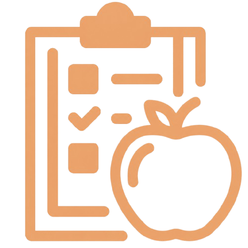
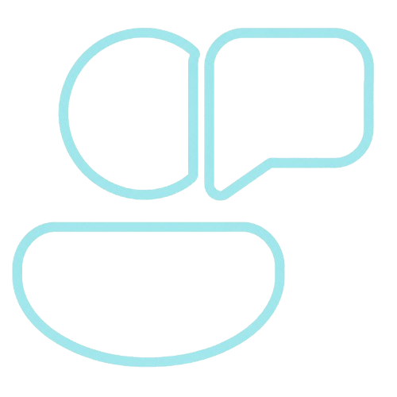
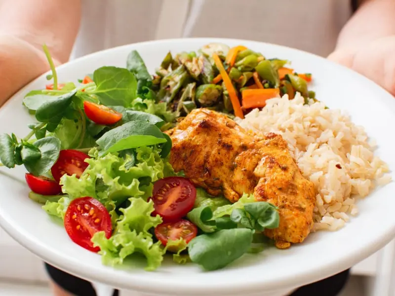

Te ayudamos a gestionar tus pacientes, crear planes personalizados y acompañar su progreso de forma fácil y organizada.
EmpezarOrganiza y consulta la información de tus pacientes de manera sencilla. Ten acceso a sus datos, objetivos y progreso para brindar un acompañamiento más organizado y personalizado.

Crea planes de alimentación adaptados a las necesidades, objetivos y estilo de vida de cada paciente. Modifica las recomendaciones según sus avances y resultados.

Mantén comunicación con tus pacientes para resolver dudas, brindar recomendaciones y acompañarlos durante todo su proceso de cambio hacia una vida saludable.
Este plan está pensado para pacientes que quieren mejorar sus hábitos alimenticios de forma sencilla y mantener una alimentación equilibrada.
Diseñado para pacientes que desean bajar grasa corporal, aumentar masa muscular o mejorar su rendimiento físico mediante una alimentación adaptada a sus objetivos.
Nuestro plan más completo. Se adapta totalmente a las necesidades, objetivos y estilo de vida de cada paciente, ofreciendo un acompañamiento más cercano.
En Yuno creemos que los nutricionistas necesitan herramientas sencillas que les permitan brindar un mejor acompañamiento a sus pacientes.
Nuestro objetivo es facilitar la gestión de pacientes, la creación de planes personalizados, el seguimiento del progreso y la comunicación durante todo el proceso.

¿Tienes dudas? Escríbenos y te ayudamos a comenzar a trabajar con Yuno.